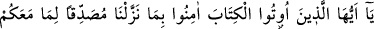
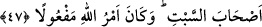

Heva ve hevesten geç, ma’rifet gemisini sal deryâya
Ârif billah ol, kalender-meşreblikten geçiver hâ!...
Neye yarar hiçbir fayda vermez tâat sağlamayan ilim
İşin sonunu görmeyen göze ben göz mü derim.
47- Ey kendilerine kitap verilenler! Biz, bir takım yüzleri silip dümdüz ederek
arkalarına çevirmeden, yâhut onları cumartesi adamları gibi lânetlemeden önce
(davranarak), size gelenleri doğrulamak üzere indirdiğimize (Kitab’a) îmân edin;
Allah’ın emri mutlaka yerine gelecektir.
“Ey kendilerine kitap”, yâni Tevrat “verilenler! Biz bir takım yüzleri silip” yâni yüz
hatlarını mahvedip göz, kaş, burun ve ağızın izlerini silip “dümdüz ederek arkalarına
çevirmeden”, yâni, yüzlerini enseleri gibi dümdüz etmeden önce.
“Tams”, izleri mahvetmek, alametleri yok etmek demektir.
İbn Abbas (r.a)’ın dediği mânâya göre ise: “Deve toynağı tabanı hayvan ayağı gibi
dümdüz yapmadan önce demektir.”
Yâhut dümdüz ettikten sonra ters çevirmek suretiyle yüzlerini enselerinin bulunduğu
yere, enselerini de yüzlerinin bulunduğu yere döndürmeden demek olur. Yâni burada
Yahûdîler diğerinin peşisıra gelecek iki cezâ ile tehdit edilmiş olurlar ki bunların ilki,
yüzleri dümdüz etmek, ikincisi de bu yüzleri arkalarına döndürmektir.
“Yâhut onları cumartesi adamları gibi lânetlemeden önce,” yâni, onları maymun ve
domuz hâline getirdiğimiz gibi onların yüzlerini de değiştirerek rezil ve rüsvay etmeden
önce “Size gelenleri,” Tevrât’ı “doğrulamak üzere indirdiğimize” Kur’ân’a “îmân
edin”. Bu tehdidin gerçekleşmesi, îmânın varlığına ve yokluğuna bağlanmıştır. Şöyle ki
eğer onlar îmân ederlerse bu tehdit gerçekleşmez. Aksi takdirde gerçekleşir. Onlardan
bir grup îmân ettiği için, yahûdîlerden îmân sözkonusu olmuştur. Onun için de tehdit
gerçekleşmemiştir.
Kur’ân’ın Tevrât’ı doğrulaması demek, onun Tevrat’ta yahûdîlere vasfedildiği şekilde
inmesi ya da kıssa, va’d-vaîd, tevhîde dâvet, insanlar arasında adâletle hükmetme,
mâsiyet ve çirkinlikleri yasaklama gibi konularda Tevrât’a uygun olması demektir.
Kur’ân-ı Kerim’in cüz’î hükümlerde Tevrât’a muhâlif gibi görünmesi ise aradan
geçen asırlarda ümmetlerde meydana gelen farklılıklar sebebiyledir. Bu gerçek bir
muhâlefet değil, bilakis her biri kendi asrına göre hak olduğundan ve teşrî çarkının
üzerinde döndüğü hikmeti ihtivâ ettiğinden uygunluğun tâ kendisidir. Hattâ önceki
kitabın nüzûlü gecikmiş olsa, sonraki kitaba kesinlikle uygun olarak nâzil olurdu.